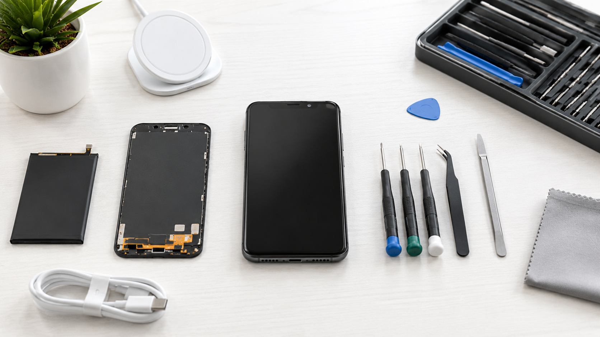

iPhone Repair in Al Barsha

Screen, Battery, Charging Port, Face ID, and Water Damage Support
If your iPhone has a broken display, battery drain, charging failure, Face ID issue, or possible water damage, this page is the fastest local route for Al Barsha visitors. P Z M Mobile & Computers helps you decide repair timing before you leave home, and same-day service is possible for common jobs when parts are available.
What to send before visiting
- iPhone model and storage variant
- Main fault (screen, battery, charging, Face ID, water)
- Whether the phone powers on normally
- How urgent the repair is
Why this local page helps
Instead of guessing repair cost or timing, you can send details on WhatsApp first and arrive with a clear next step. This is especially useful when you need a same-day decision around work, school, or travel.
Start iPhone Repair Check on WhatsApp
Share model and issue first. We will advise likely repair path and timing before your Al Barsha visit.
Useful Pages Before You Visit
iPhone Repair Questions in Al Barsha
Can I get same-day iPhone repair in Al Barsha?
Yes. Screen and battery repairs are often same-day when parts and queue allow. Complex cases may need more time.
Do you handle charging and Face ID issues?
Yes. We diagnose charging-port faults and Face ID-related issues and explain options before starting work.
What about water-damaged iPhones?
Water-damage phones are assessed first to determine board impact and realistic repair path.
Should I message before visiting?
Yes. WhatsApp first for faster intake and a clearer same-day expectation.